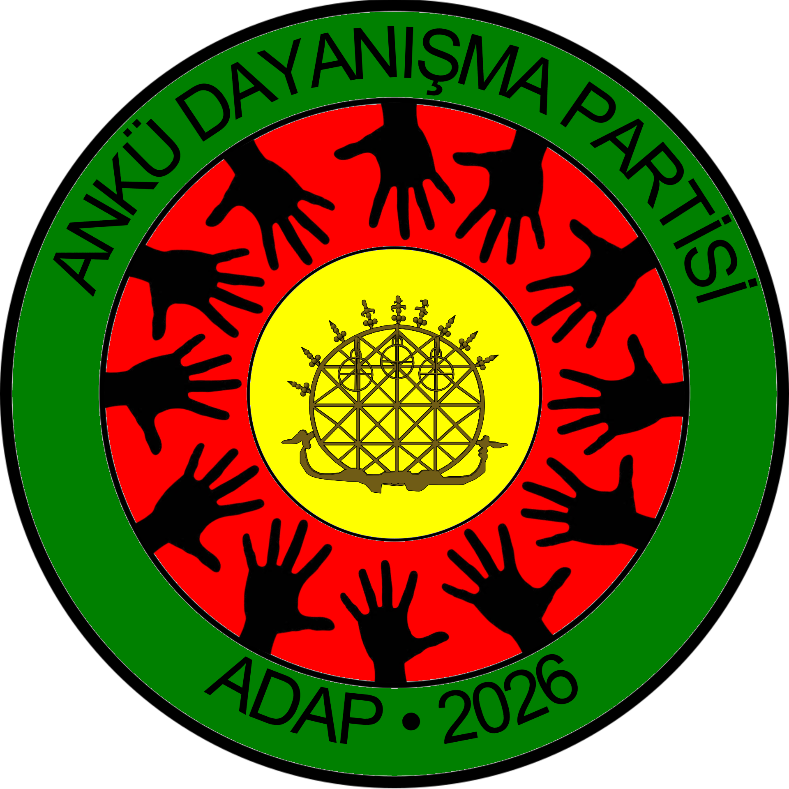
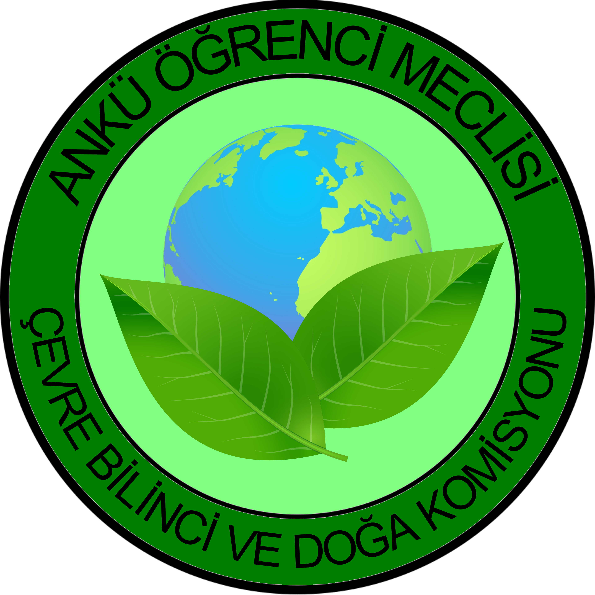
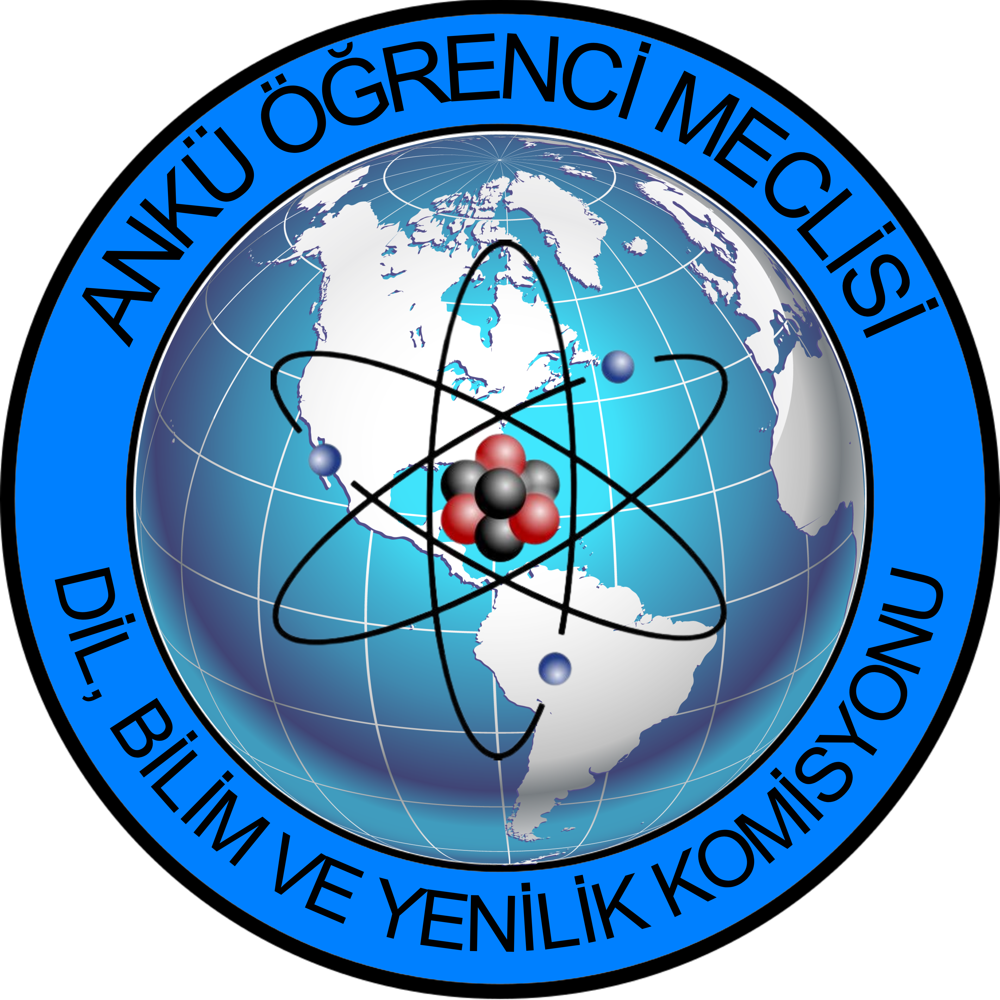
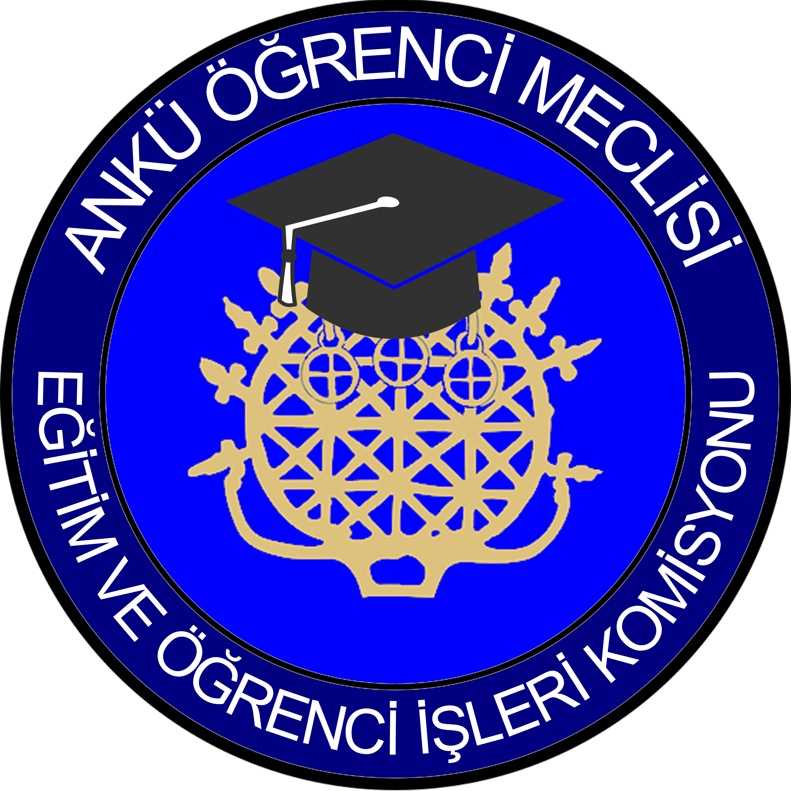
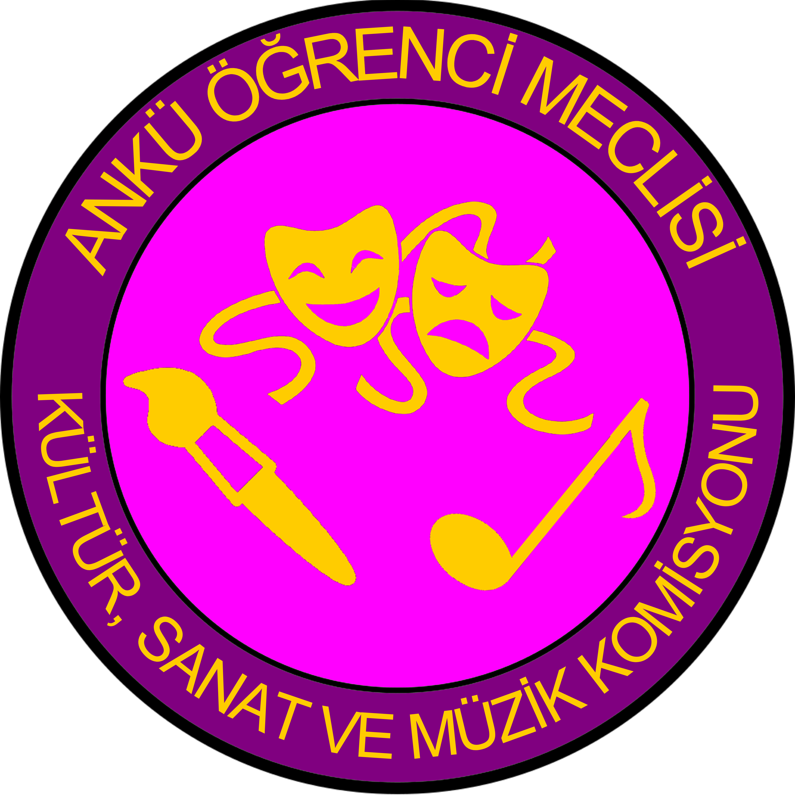
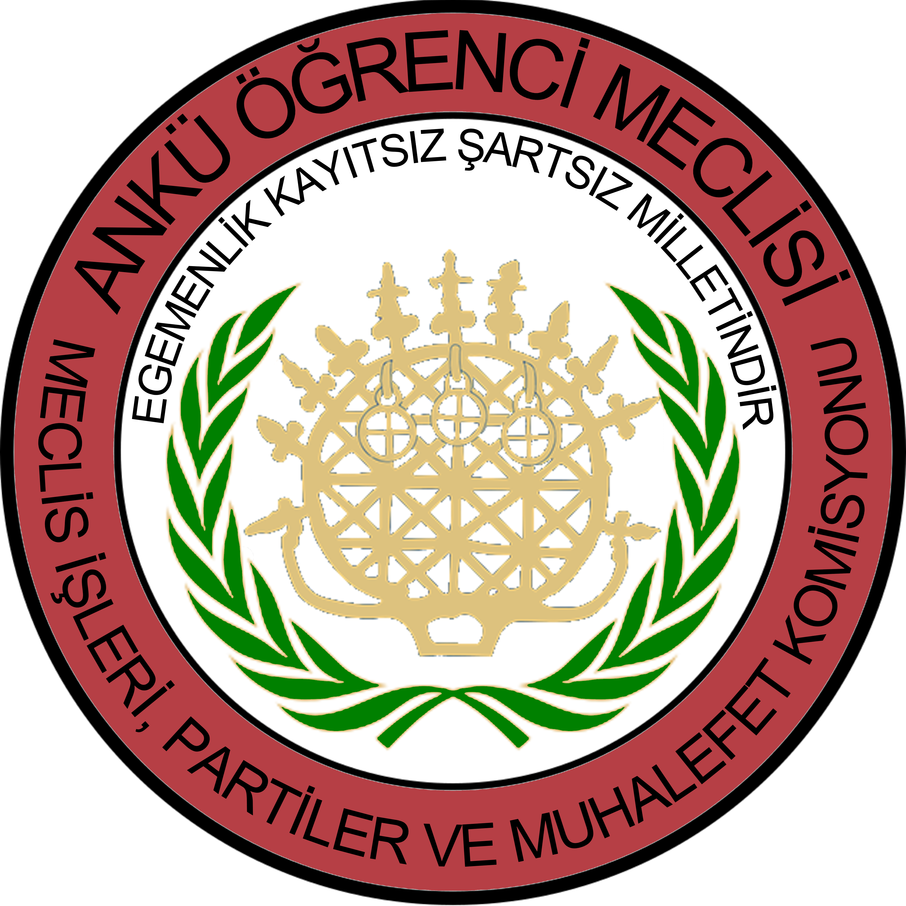
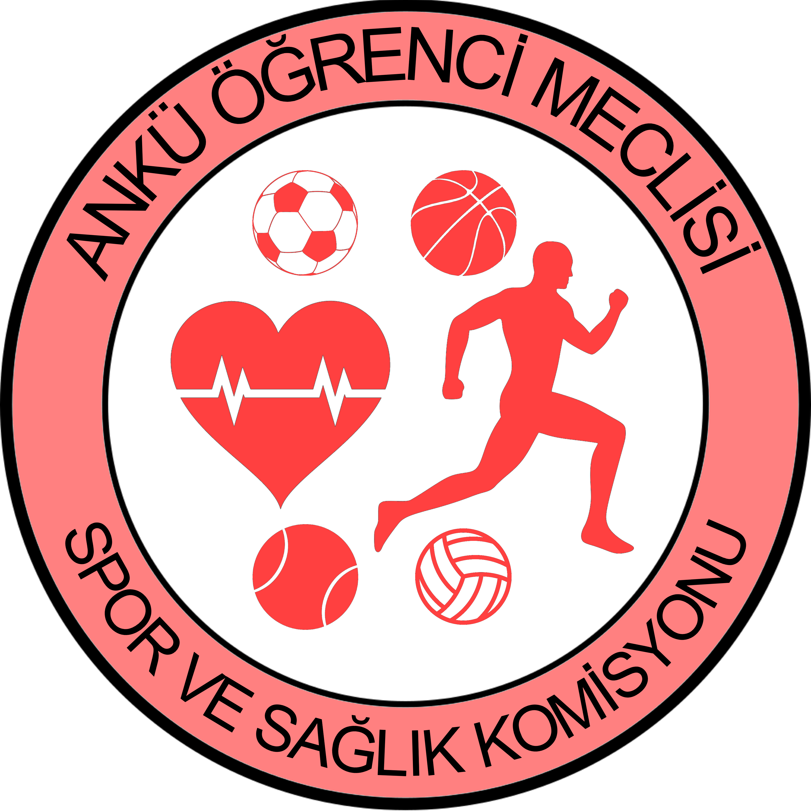

 |
Çevre ve Doğa KomisyonuBu komisyon geçen yılki gibi çevre bilinci kazandırmak ve okulun doğal alanlarıyla ilgili çalışmalar yapmaktır. |
 |
Dil, Bilim ve Yenilik KomisyonuBu yeni komisyon; dil ve bilim aktiviteleriyle ve eğitimiyle ünlü okulumuza her türlü bilimsel yeniliği yapmak için kurulmuştur. |
 |
Eğitim ve Öğrenci İşleri KomisyonuGeçen yılın Eğitim ve Akademi Komisyonu bu yıl Eğitim ve Öğrenci İşleri Komisyonu olacak. Komisyonun "öğrenci işleri" kısmının yaptığı şudur: Örneğin öğrencilerin çoğu bir şey istiyor ama idare bunu kabullenmiyor veya istemiyor, mesela öğrencilerin %90'ı "branşlaşma" uygulamasının kaldırılmasını istiyor ama idare karşı. Bu durumda normal bir Meclis teklifinden farklı olarak bunu neredeyse herkes istediğinden Meclis toplantısında Komisyonun bu konu hakkında idareyle pazarlık yapıp yapmaması oylanır ve kazanırsa komisyon üyeleri idareyle branşlaşmanın kaldırılması hakkında pazarlık yapar. |
 |
Kültür, Sanat ve Müzik KomisyonuGeçen yıl Kültür ve Sanat olan komisyona bu yıl "müzik" de eklenecek çünkü drama ve görsel sanatların ilgili komisyonu müzik dersiyle de ilgilenmeli. |
 |
Meclis İşleri, Partiler ve Muhalefet KomisyonuBu komisyon, iktidar partisi olursak bizi eleştirebilecek, yanlış yaptıklarımızı bize söyleybilecek ve Öğrenci Meclisi yazmanlarının kâğıtlarını resmî gazeteye çevrilip öğrencilere ulaşması için bize verecek. |
 |
Spor ve Sağlık KomisyonuBu komisyon geçen yıldan farklı olarak branşlaşma dersleriyle daha yakından ilgilenecek ve bu yüzden logosunda okulumuzun spor branşlarının sembolleri var. |
Sosyal Sorumluluk Komisyonuİnsanların toplumun çıkarlarını kendi çıkarlarından ön plana koyması olan sosyal sorumluluk önemli bir değerdir, dolayısıyla geçen yılki gibi komisyonunun olmasını hak ediyor. |